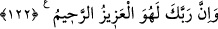

122. Şüphesiz Rabbin, işte O, mutlak galip ve engin merhamet sahibidir.
“Şüphesiz Rabbin, işte O, mutlak galip” Azîz’dir; kâfirlere istediği cezayı vermede
gâlip ve güçlüdür “ve engin merhamet sahibidir.” Rahîmdir; tevbe eden kimselere
yahut azâbı te’hîr etme konusunda merhamet sâhibidir.
et-Te’vîlâtü’n-Necmiyye’de der ki: “Her kıssanın sonunda “Doğrusu bunda büyük
bir ders vardır; ama çokları iman etmezler.” sözü tekrar edidi. Bu şuna delâlet etmek
içindir: Allah’ın izzeti ve azameti, halkın en değerli olanının O’na iman eden ve O’nun
tarafından makbul olan kimseler olmasını gerektirmiştir. Nitekim Allah Teâlâ şöyle
buyurur: “Muhakkak ki Allah yanında en değerli olanınız, en muttakî
olanınız/O’ndan en çok korkanınızdır.” (el-Hucurât, 49/13).
Şüphe yok ki insanların çoğu namert kimselerdir. Şerefli olanları azdır. Nitekim şâir
şöyle der:
Sen bizi sayıca azlıkla ayıplarsın.
Dedim ki: Asil kimseler dâima azdır.
İşte bundan dolayı ardından “Şüphesiz Rabbin, işte O, mutlak galip” Azîz’dir; O’nun
aziz, nefis sahiplerinin ise bayağı olmasından dolayı nefis ehlinden zelil kimseler O’na
erişemezler. “Ve engin merhamet sahibidir.” Rahimdir; rahmetinin bolluğundan ve kalb
ehlinin himmetlerinin yüksekliğinden dolayı onların değerli olanlarından dilediği
kimseleri rahmeti ile kendisine seçer.
Himmet sahibi olan dervişin/yoksulun canına aferin.
Nûh (a.s.) ile kalb Nûh’una, kavmi ile nefis ve sıfatlarına, mü’minler ile cesed ve
uzuvlarına işaret edilmiştir. Çünkü cesed ve uzuvlar, şeriata uygun olarak rükünleriyle
amel etmek sûretiyle îman ettiler. Yine nefsin bazı sıfatlarına işaret edilmiştir. Bu
sıfatların îmanı ise onların yerilenlerden övülenlere çevrilmesi iledir. Gemi ile emirler,
nehiyler, hikmetler, öğütler, sırlar, hakikatlar ve mânâlarla dolu şeriat gemisine işaret
edilmiştir. Kim bu gemiye binerse kurtulur. Binmeyen kötü ahlakın istilası; mal, mevkî,
ziynet ve şehvetler gibi aşağılık dünyanın ibtilâları tufanı ile boğulur. Geminin mutlaka
bir kaptana ihtiyacı vardır. O da mutlak olarak hayır öğreten kimsedir. Çünkü kurtuluş
onun sohbeti/beraberliği ile gerçekleşir. Nitekim Hâfız der ki:
Hak erlerine dost ol, çünkü Nuh’un gemisinde
Öyle toprak vardır ki Tufan’ı bile bir damlacık su saymaz